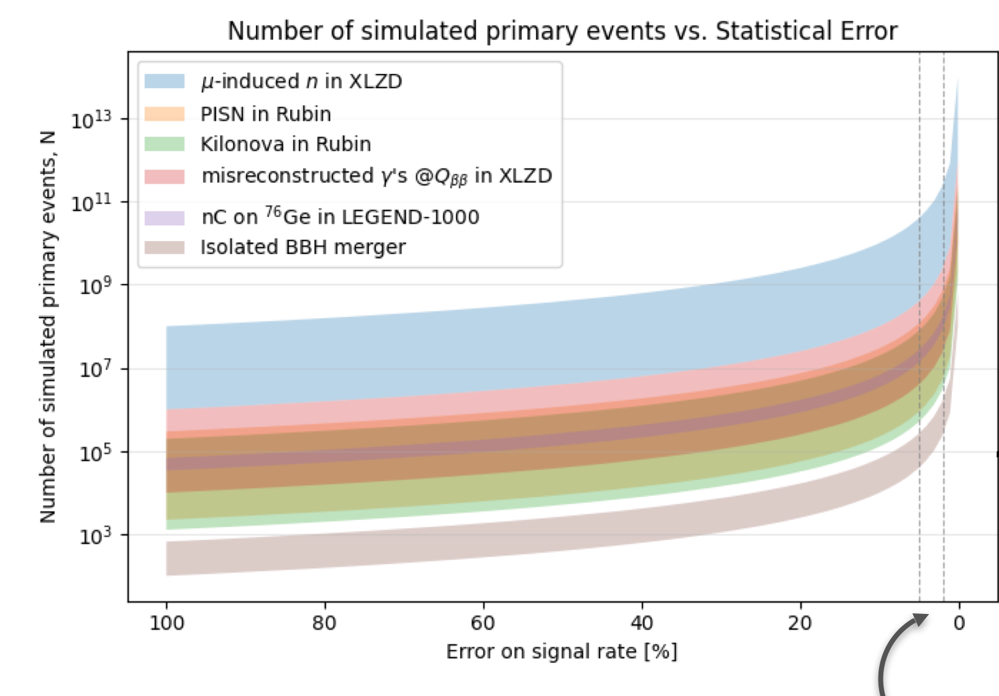

Methods article · Rare-event probability estimation
Estimating rare-event probabilities
Rare-event rates enter forecasts of experimental sensitivity, yet direct simulation can require enormous samples to estimate them precisely. This article derives conditional Monte Carlo for a binary detector event and explains how a neural network can estimate the conditional probabilities, while separating the method’s variance guarantee from the errors of a learned model.
Abstract
Rare-event probabilities enter forecasts of which signals an experiment can distinguish from background. With direct counting, the relative standard error for a rare event of probability p is approximately 1/√(Np). If φ denotes the inputs to a simulated event and X its hit indicator, the conditional expectation E[X | φ] is the hit probability for those inputs. Averaging this probability is unbiased for the same target as counting outcomes. The law of total variance shows that it removes the Bernoulli component of sampling variance; the Rao–Blackwell theorem states the general result. A neural network trained with a proper probability loss can estimate the conditional expectation, while finite-sample accuracy and calibration require separate evaluation.
Keywords: rare-event probabilities, conditional Monte Carlo, Rao–Blackwell theorem, probability estimation, neural networks
1 · Physics motivation
Rare-event rates enter experimental sensitivity
The Vera C. Rubin Observatory will repeatedly image the southern sky during a ten-year survey. Among the brief transients sought in those images are kilonovae: optical and infrared emission following the merger of two neutron stars. Because their light changes quickly, detection depends on brightness and distance, as well as when and how often the sky is observed. One Rubin simulation study forecasts about 42 ± 4 detections per year under its assumed population and survey conditions; only 7–11% of its simulated light curves meet the study’s stricter alert criterion, which requires a signal clearly above image noise. The expected yield therefore depends on how detection is defined.
LEGEND-1000 addresses a different question. It searches for neutrinoless double-beta decay: a hypothesized nuclear process in which two electrons are emitted without the neutrinos produced in ordinary double-beta decay. Its target is enriched germanium-76. The projected 90% confidence-level sensitivity corresponds to a half-life of about 1.4 × 1028 years—roughly 1018 times the age of the Universe. This is a sensitivity reach, not a waiting time for one nucleus to decay: 910 kg of germanium-76 contains about 7 × 1027 nuclei, so a ten-year exposure at that half-life would produce only about four decays before detection efficiency and analysis cuts.
For such searches, simulation helps estimate how often background processes produce events that pass the same selection as a possible signal. A background estimate that is too low can make projected sensitivity look stronger than the experiment will achieve; one that is too high can make the projection unnecessarily pessimistic. Both can affect choices about materials, shielding, geometry, and analysis. Before considering the probability model in detail, the plot shows the simulation counts implied by different precision targets.

The steep increase follows from direct counting. If each simulated primary has probability p of producing an event of interest, then N trials yield about Np events. For small p, the relative statistical error is approximately 1/√(Np). A 1% target therefore requires about 104/p simulated primaries:
ε ≈ 1√(Np) ⇒ N ≈ 1pε2
This approximation assumes independent trials and a rare event. It describes statistical counting error, not uncertainty in the physics model.
Simulation time and design studies
For a probability of 10−6, or about one event per million simulated primaries, a 1% relative error requires 1010 events for one configuration. For illustration, if 100 detector designs or systematic settings each require a fresh sample at that precision, the total is 1012 events. At an illustrative cost of 0.01 CPU-seconds per primary, that is 1010 CPU-seconds, or about 317 core-years. Even with 100 cores occupied continuously and ideal parallelization, the full study would take about 3.2 years.
The runtime depends on the simulation, event complexity, hardware, and parallel efficiency; 0.01 CPU-seconds is an arithmetic example, not a benchmark. The point is the scaling: design scans, background variations, and systematic studies can multiply the sample requirement, turning a single estimate into a multi-year computation.
Consequences for projected sensitivity
Next-generation experimental programs can cost more than $500 million and take years to build. For scale, the U.S. Department of Energy’s FY2025 budget request lists a $3.277 billion total project-cost estimate for the Long-Baseline Neutrino Facility and Deep Underground Neutrino Experiment. This covers a broad construction scope, including the beamline, facilities, near and far detectors, and cryogenic infrastructure; it is not a detector-hardware-only figure.
If a background is underestimated, a design may proceed with insufficient shielding, materials with too much intrinsic radioactivity, or a geometry that cannot reach the projected background level. Once constructed, these choices can be difficult or costly to change. In a simple background-dominated counting model, the significance scales as Z ≈ S/√B, where S and B are expected signal and background counts. If the true background is four times the assumed value, the same signal has about half the projected significance; twice as many signal events would be needed to recover it. This illustrates how an incorrect background estimate can reduce the sensitivity achieved by an experiment.
Real sensitivity calculations also include exposure, efficiency, control measurements, and systematic uncertainties; this square-root relation is not a full forecast. Simulation statistics, probability-model error, and physical-model uncertainty must be assessed separately. The derivation that follows isolates the statistical counting problem: a particle either produces a hit in a specified detector region or it does not.
2 · Probability model
Defining the event probability
Consider one fixed detector design. A simulation first samples the conditions for a particle event, such as the particle’s starting position, direction, and energy. Given those conditions, it models the particle’s passage through matter and records whether the event produces a hit in the region of interest.
Write θ for the detector design and φ for the event conditions. The conditions are sampled from a specified distribution g. Let X equal 1 when the event produces a hit and 0 otherwise. For a fixed pair (θ, φ), define p(θ, φ) as the conditional probability of a hit. In the notation X | φ ∼ Bernoulli(p(θ,φ)), Bernoulli means a binary random variable equal to 1 with probability p(θ,φ) and 0 otherwise. The quantity of interest is the hit probability averaged over the event conditions.
| θ | Fixed detector design, including its geometry and materials. |
|---|---|
| φ ∼ g | Event conditions sampled from the distribution g. |
| X ∈ {0,1} | Observed hit indicator for one simulated event. |
| p(θ,φ) | Probability of a hit, conditional on the design and event conditions. |
| p̄(θ) | Overall hit probability after averaging over φ. |
3 · Direct estimator
Estimating probability by counting hits
Monte Carlo estimation approximates an average using random samples. Here, one sample is one simulated particle event. For N independent events, the direct estimate is the fraction that hit:
p̂count(θ) = 1N ∑i=1N Xi
Each event contributes either 1 (hit) or 0 (miss).
For a Bernoulli outcome, the standard error is approximately √(p̂(1 − p̂)/N). Dividing by p̂ gives the relative standard error, approximately √((1 − p̂)/(N p̂)). With only three observed hits, this is √(0.997/3) ≈ 0.58. Thus the uncertainty is large relative to the 0.3% estimate.
4 · Conditional Monte Carlo
Using the probability for each event
Direct counting records only the realized hit or miss. Yet the event conditions are known in every run. If the conditional hit probability for those conditions can be evaluated, then the binary result Xi can be replaced by its conditional expectation
βi = E[Xi | φi] = p(θ, φi)
The event conditions φi remain random across runs; the hit or miss randomness for fixed conditions is averaged out.
Direct counting
p̂count = 1N ∑i=1N Xi
Average the observed 0/1 outcomes.
Conditional Monte Carlo
p̂CMC = 1N ∑i=1N βi
Average the conditional probabilities for those same events.
Key requirement. This estimator requires the conditional expectation p(θ,φi), not merely the one hit or miss generated by the simulation. The next sections first analyze the exact probability, then return to how it may be approximated.
5 · Derivation
Equal expectation and reduced variance
Assume independent runs with φi ∼ g and Xi | φi ∼ Bernoulli(p(θ,φi)). Write pi = p(θ,φi) and p̄ = Eφ[p(θ,φ)] for a fixed design. Variance describes how much an estimate changes across repeated batches of random events. The derivation has two parts.
5.1 The estimators have the same expectation
By the definition of conditional expectation, averaging E(X | φ) over the event conditions gives E(X). So replacing each outcome by its conditional probability does not change the target or introduce bias when the probability is exact.
Within fixed event conditions
Eφ[Var(X | φ)] = Eφ[p(1 − p)]
The hit/miss randomness that remains after the event conditions are fixed.
Across event conditions
Varφ(E[X | φ]) = Varφ(p)
The change in hit probability as the sampled event conditions change.
5.2 The conditional estimator removes one variance component
For a Bernoulli outcome, Var(X | φ) = p(1 − p) and E[X | φ] = p. The law of total variance therefore gives:
With independent runs, the variance of a sample mean is the variance of one run divided by N. Direct counting retains both terms; conditional Monte Carlo retains only variation across event conditions:
Direct countingVar(p̂count) = [Eφ{p(1 − p)} + Varφ(p)] / N
Conditional Monte CarloVar(p̂CMC) = Varφ(p) / N
The reduction is the average Bernoulli variance that would have been contributed by the individual hit/miss draws. Differences in event conditions are still present in the conditional estimate.
The conditional expectation E[X | φ] removes the random hit/miss fluctuation at fixed event conditions, while variation in p(θ,φ) across conditions remains. This is the quantity a learned model must estimate to reduce Monte Carlo variance.
6 · Illustrative example
A known probability function
Consider an illustrative model in which φ ∼ U(0,1) and the conditional hit probability is p(φ) = 0.015 exp(−5φ). This function is specified exactly so the variance reduction can be calculated without adding any error from a learned model.
Averaging over φ gives p̄ ≈ 0.00298, or about 0.30%. In this example, direct-counting variance is about 218 times the conditional Monte Carlo variance. Equivalently, at the same sampling precision, the exact conditional estimator requires about 1/218 as many sampled events.
Equal numbers of sampled events
Expected relative standard error
At 1,000 events, both estimators have the same expected number of hits: about 3.
A bound for rare events
Var(p̂CMC) / Var(p̂count) = Varφ(p) / [p̄(1 − p̄)] ≤ pmax / (1 − p̄)
Because p² ≤ pmaxp, the ratio is bounded by the largest conditional hit probability divided by 1 − p̄. When the overall hit probability is small, the denominator is close to one. This bound explains why variance reduction can be large when every event condition has a small hit probability.
7 · Probability learning
Learning conditional hit probabilities
Conditional Monte Carlo requires p(θ,φ) = E[X | θ,φ], while an individual simulation run returns only one hit or miss. A neural network trained on simulated event conditions and binary outcomes can estimate this conditional mean. Its target is the probability of a hit for specified inputs, rather than a classification of the one outcome observed in a particular run.
For binary outcomes, the population minimum of binary cross-entropy is the true conditional probability. If the probability at fixed inputs is p and the network predicts r, the expected loss is:
L(r | p) = −p log r − (1 − p) log(1 − r)
∂L/∂r = (r − p) / [r(1 − r)] = 0 when r = p
The population minimizer is r = p; at this optimum, the prediction equals the conditional mean of the hit indicator.
At the population optimum, E[X − r | θ,φ] = 0: among repeated outcomes with the same modeled conditions, the predicted hit probability equals the hit frequency in expectation. This is the sense in which the probability target is conditionally unbiased. A finite neural network may not reach that optimum. Limited training data, model misspecification, or distribution shift can leave its probabilities biased or miscalibrated, so calibration should be evaluated on independent simulated events.
If the network predictions equal the exact p(θ,φ), averaging them gives the conditional Monte Carlo estimator derived above. Approximate predictions are a practical estimate of that target, not an automatic extension of the Rao–Blackwell guarantee.
8 · Scope and validation
Assumptions and model checks
The variance comparison above assumes independent events sampled from the same distribution g and an exact conditional probability. In practice, the estimated result can also be affected by finite sampling of event conditions, bias or miscalibration in a learned probability model, and differences between the simulated and physical systems.
These sources should be considered separately. A small variation across repeated averages does not establish that the probability model is accurate.
- Specify the target distribution.State how particle starting conditions are sampled and which detector design and hit definition are used.
- Assess probability calibration.Among events assigned a given hit probability, compare predicted and observed hit frequencies.
- Evaluate on independent simulations.Use events that were not used for training and examine error across the conditions that contribute to the estimate.
- Report sampling and model uncertainty separately.Finite-run variation and error in a learned probability model have different sources.
References
Methods and context
- Rao, C. R. (1945). “Information and accuracy attainable in the estimation of statistical parameters.”Bulletin of the Calcutta Mathematical Society, 37(3), 81–91.
- Blackwell, D. (1947). “Conditional expectation and unbiased sequential estimation.”Annals of Mathematical Statistics, 18(1), 105–110.
- Gneiting, T. & Raftery, A. E. (2007). “Strictly proper scoring rules, prediction, and estimation.”Journal of the American Statistical Association, 102(477), 359–378.
- Vera C. Rubin Observatory. “The Legacy Survey of Space and Time.”Survey overview and planned ten-year observing program.
- Rubin Observatory kilonova detection study (2025).Simulation-based yield estimates, including the dependence on signal-to-noise alert criteria.
- LEGEND Collaboration. “LEGEND-1000.”Projected isotope mass, exposure, and neutrinoless double-beta decay sensitivity.
- U.S. Department of Energy, Office of Science. FY2025 Congressional Budget Request.LBNF/DUNE total project cost estimate and construction scope.
The plotted simulation counts are study-specific estimates. They are distinct from observed event counts and from full experiment sensitivity forecasts.